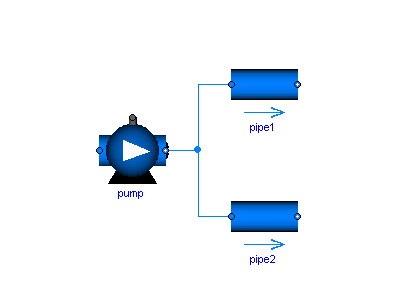
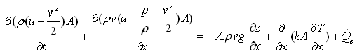
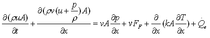
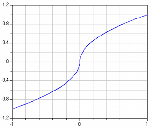
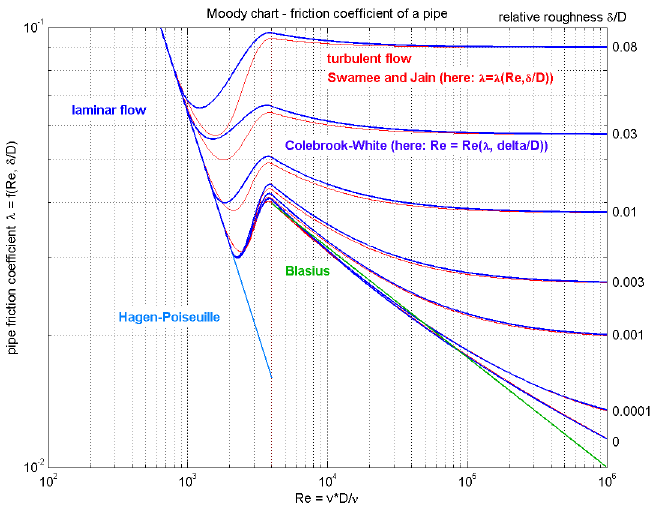
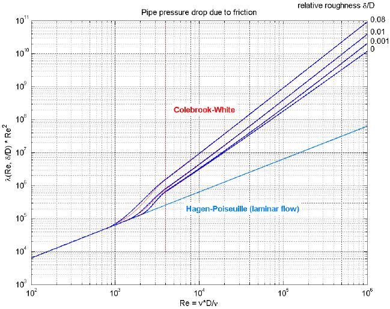

Modelica.Fluid.UsersGuide.ComponentDefinition
Modelica.Fluid.UsersGuide.ComponentDefinition
Modelica.Fluid.UsersGuide.ComponentDefinitionIn this section it is described how the components of the Modelica.Fluid library are implemented. If you would like to introduce new components either in Modelica.Fluid or your own library, you should be aware of the issues discussed in this section.
This section is partly based on the following paper:
Extends from Modelica.Icons.Information (Icon for general information packages).
| Name | Description |
|---|---|
| Fluid connectors | |
| Balance equations | |
| Upstream discretization | |
| Regularizing characteristics | |
| Wall friction | |
| Valve characteristics |
Modelica.Fluid.UsersGuide.ComponentDefinition.FluidConnectorsIn this section the design of the fluid connectors is explained.
Fluid connectors represent the points in a device (e.g., the flanges) through which a fluid can flow into or out of the component, carrying its thermodynamic properties; these flanges are assumed to be fixed in space.
A major design goal is that components can be arbitrarily connected and that the important balance equations are automatically fulfilled when 2 or more components are connected together at one point as shown in the next figure:
In such a case the balance equations define ideal mixing, i.e., the upstream discretization scheme of each component uses values that result from ideal mixing in an infinitely small time period. If more realistic modelling is desired that takes into account mixing losses, an explicit model has to be used in the connection point.
For a single substance medium, the connector definition in Modelica.Fluid.Interfaces.FluidPort reduces to
connector FluidPort
replaceable package Medium = Modelica.Media.Interfaces.PartialMedium
"Medium model of the fluid";
flow Medium.MassFlowRate m_flow;
"Mass flow rate from the connection point into the component";
Medium.AbsolutePressure p
"Thermodynamic pressure in the connection point";
stream Medium.SpecificEnthalpy h_outflow
"Specific thermodynamic enthalpy close to the connection point if m_flow < 0";
end FluidPort;
The first statement defines the Medium flowing through the connector. In a medium, medium specific types such as "Medium.AbsolutePressure" are defined that contain medium specific values for the min, max and nominal attributes. Furthermore, Medium.MassFlowRate is defined as:
type MassFlowRate =
Modelica.SIunits.MassFlowRate(quantity="MassFlowRate." + mediumName);
With the current library design, it is necessary to explictly select the medium model for each component in a circuit. This model is then propagated to the ports, and a Modelica translator will check that the quantity and unit attributes of connected interfaces are identical. Therefore, an error occurs, if connected FluidPorts do not have a medium with the same medium name. In the future, automatic propagation of fluid models through the ports will be introduced, but this still not possible with Modelica 3.0.
The thermodynamic pressure is an effort variable, which means that the connection of two or more ports states that the port pressures are the same.
The mass flow rate is a flow variable, which means that the connection of two or more ports states that the sum of all flow rates is zero.
The last variable is a stream variable, i.e., a specific quantity carried by the flow variable. The quantity on the connector always corresponds to the value close to the connection point, assuming that the fluid is flowing out of the connector, regardless of the actual direction of the flow. This helps avoiding singularities when the mass flow goes through zero. The stream properties for the other flow direction can be inquired with the built-in operator inStream(..), while the value of the stream variable corresponding to the actual flow direction can be inquired through the built-in operator actualStream(..).
The actual equations corresponding to these operators are introduced and solved automatically by the tool. In principle, they correspond to the balance equation sum(flow_variable) = 0 and sum(flow_variable*stream_variable_at_connection) = 0 applied to the set of connected ports. In this case the first equation is the mass balance sum(m_flow) = 0, and the second is the energy balance at the connection point sum(m_flow*h_connection) = 0.
In the simpler case of a one-to-one connections between port_a and port_b, inStream(port_a.h_outflow) just returns port_b.h_outflow. For multiple-way connections, mixing equations are generated, and special care is taken in order to avoid discontinuities around zero flow rates. For more details, see this presentation which illustrates the stream concept rationale and the underlying technicalities.
A connector should have only the minimal number of variables to describe the interface, otherwise there will be connection restrictions in certain cases. Therefore, in the connector no redundant variables are present, e.g., the temperature T is not present because it can be computed from the connector variables pressure p and specific enthalpy h.
Here are two simple examples to illustrate modeling with stream connectors. The first one is a rigid adiabatic volume mixing two flows, where the kinetic and gravitational terms in the energy balance are neglected for simplicity.
model MixingVolume "Volume that mixes two flows"
replaceable package Medium = Modelica.Media.Interfaces.PartialPureSubstance;
FluidPort port_a, port_b;
parameter Modelica.SIunits.Volume V "Volume of device";
Modelica.SIunits.Mass m "Mass in device";
Modelica.SIunits.Energy U "Inner energy in device";
Medium.BaseProperties medium(preferredMediumStates=true) "Medium in the device";
equation
// Definition of port variables
port_a.p = medium.p;
port_b.p = medium.p;
port_a.h_outflow = medium.h; // The stream variable always corresponds to the
port_b.h_outflow = medium.h; // properties of the fluid holdup (outgoing flow)
// Total quantities
m = V*medium.d;
U = m*medium.u;
// Mass and energy balance (actualStream(..) is a built-in operator for streams to
// compute the right h, depending on the flow direction)
der(m) = port_a.m_flow + port_b.m_flow;
der(U) = port_a.m_flow*actualStream(port_a.h_outflow) +
port_b.m_flow*actualStream(port_b.h_outflow);
end MixingVolume;
The second example is the model of a component describing a lumped pressure loss between two ports, with no energy storage and no heat transfer. An isenthalpic transformation is assumed (changes in kinetic and potential energy between inlet and outlet are neglected)
model PressureLoss "Pressure loss component" replaceable package Medium=Modelica.Media.Interfaces.PartialPureSubstance; FluidPort port_a, port_b: Medium.ThermodynamicState port_a_state_inflow "State at port_a if inflowing"; Medium.ThermodynamicState port_b_state_inflow "State at port_b if inflowing"; Medium density d_a, d_b "Density at ports a and b if inflowing"; replaceable function f "Function to compute the mass flow rate"; equation // Medium states for inflowing fluid port_a_state_inflow = Medium.setState_phX(port_a.p, inStream(port_a.h_outflow)); port_b_state_inflow = Medium.setState_phX(port_b.p, inStream(port_b.h_outflow)); // Mass balance 0 = port_a.m_flow + port_b.m_flow; // Instantaneous propagation of enthalpy flow between the ports with // isenthalpic state transformation (no storage and no loss of energy) port_a.h_outflow = inStream(port_b.h_outflow); port_b.h_outflow = inStream(port_a.h_outflow); // (Regularized) Momentum balance port_a.m_flow = f(port_a.p, port_b.p, d_a, d_b); end PressureLoss;
If many such components are connected in series between two models with storage, the specific enthalpies are propagated in both directions and available to all pressure loss components, without problems when the mass flow goes through zero. The function f then uses either d_a or d_b depending on the sign of port_a.p-port_b.p, with a suitable regularization around zero to avoid discontinuities.
Please note that these models are highly idealized in order to explain the stream connector concept. Device models in the library are much more complete, handling issues such as initialization, steady vs. dynamic modelling, heat transfer from the outside, etc.
Modelica.Fluid can handle models where the fluid contains multiple substances, so that its composition can be characterized by mass fraction vectors.
connector FluidPort
replaceable package Medium = Modelica.Media.Interfaces.PartialMedium
"Medium model of the fluid";
flow Medium.MassFlowRate m_flow;
"Mass flow rate from the connection point into the component"
Medium.AbsolutePressure p
"Thermodynamic pressure in the connection point";
stream Medium.SpecificEnthalpy h_outflow
"Specific thermodynamic enthalpy close to the connection point if m_flow < 0";
stream Medium.MassFraction Xi_outflow[Medium.nXi]
"Independent mixture mass fractions m_i/m close to the connection point if m_flow < 0";
stream Medium.ExtraProperty C_outflow[Medium.nC]
"Properties c_i/m close to the connection point if m_flow < 0";
end FluidPort;
The mass fraction vectors Xi and C are also stream quantities, as they are carried by the mass
flow rate. The corresponding connection equations are sum(m_flow*Xi) and sum(m_flow*C), which correspond to mass balances for the single substances. The vector Xi contains the mass fractions
of the main components of the fluid, and is used together with p and h to determine the
thermodynamic state of the fluid. The vector C contains the mass fraction of the trace components,
which are accounted for in mass balances, but is ignored when computing the fluid properties. This
allows to easily declare and use medium models with trace components starting from existing medium
models (e.g., adding CO2 traces to Moist Air for air conditioning models).
Summing up, when two or more ports of the type FluidPort are connected, the following equations are generated by the tool:
sum(port_j.m_flow) = 0; // Total Mass balance port_j = port_k; // Momentum balance sum(port_j.m_flow*h_connection) = 0; // Energy balance sum(port_j.m_flow*Xi_connection) = 0; // Single component mass balances sum(port_j.m_flow*C_connection) = 0; // Trace components mass balances
It is very important to bear in mind that
In all other cases, i.e., different port diameters and/or multple port connections:
Extends from Modelica.Icons.Information (Icon for general information packages).
Modelica.Fluid.UsersGuide.ComponentDefinition.BalanceEquationsFor one-dimensional flow along the coordinate "x", the following partial differential equations hold
| Mass balance |  |
| Momentum balance |  |
| Energy balance 1 |  |
| Pipe friction |  |
| x: independent spatial coordinate (flow is along coordinate x) t: time v(x,t): mean velocity p(x,t): mean pressure T(x,t): mean temperature ρ(x,t): mean density u(x,t): specific internal energy z(x): height over ground A(x): area perpendicular to direction x g: gravity constant f: Fanning friction factor S: circumference |
An alternative energy balance can be derived by multiplying the momentum balance with "v" and substracting it from the energy balance 1 above. This results in the "energy balance 2":
| Energy balance 2 |  |
This formulation separates the internal energy of the fluid from the kinetic energy of fluid flow. The internal energy is treated by the energy balance 2, the kinetic energy is treated by the momentum balance equally well. The evaluation of medium properties, which are independent of the kinetic energy, and the formulation of many fluid models is simplified with the energy balance 2. The overall conservation of energy is achieved by considering the mutual dependencies of energy and momentum balance.
Some components in the library, like DynamicPipe, provide a rigorous implementation of mass, momentum and energy balance, using the energy balance 2 equation. Other components, like Valves and Fittings, neglect the impact of changes of the kinetic energy and potential energy on the energy balance, because they are usually irrelevant compared to changes due to heat flows. The StaticPipe component neglects the effect of kinetic energy, but includes the potential energy in the balance, which might be substantial.
All modelling assumptions and simplifications are stated in the component documentation; please note that some of the assumptions might be stated in the base classes the component inherits from.
Extends from Modelica.Icons.Information (Icon for general information packages).
Modelica.Fluid.UsersGuide.ComponentDefinition.UpstreamDiscretizationWhen implementing a Fluid component, the difficult arises that the value of intensive quantities (such as p, T, ρ) shall be accessed from the upstream volume. For example, if the fluid flows from volume A to volume B, then the intensive quantities of volume B have no influence on the fluid between the two volumes. On the other hand, if the flow direction is reversed, the intensive quantities of volume A have no influence on the fluid between the two volumes.
In the Modelica.Fluid library, such a situation is handeled with the following code fragment (from Interfaces.PartialTwoPortTransport):
replaceable package Medium =
Modelica.Media.Interfaces.PartialMedium
annotation(choicesAllMatching = true);
Interfaces.FluidPort_a port_a(redeclare package Medium = Medium);
Interfaces.FluidPort_b port_b(redeclare package Medium = Medium);
Medium.ThermodynamicState port_a_state_inflow
"Medium state close to port_a for inflowing mass flow";
Medium.ThermodynamicState port_b_state_inflow
"Medium state close to port_b for inflowing mass flow";
equation
// Isenthalpic state transformation (no storage and no loss of energy)
port_a.h_outflow = inStream(port_b.h_outflow);
port_b.h_outflow = inStream(port_a.h_outflow);
port_a.Xi_outflow = inStream(port_b.Xi_outflow);
port_b.Xi_outflow = inStream(port_a.Xi_outflow);
// Mass balance
port_a.m_flow + port_b.m_flow = 0;
// Medium states for inflowing medium
port_a_state_inflow = Medium.setState_phX(port_a.p, port_b.h_outflow, port_b.Xi_outflow);
port_b_state_inflow = Medium.setState_phX(port_b.p, port_a.h_outflow, port_a.Xi_outflow);
// Densities close to the parts when mass flows in to the respective port
port_a_rho_inflow = Medium.density(port_a_state_inflow);
port_b_rho_inflow = Medium.density(port_b_state_inflow);
// Pressure drop correlation (k_ab, k_ba are the loss factors for the two flow
// directions; e.g., for a circular device: k = 8*zeta/(pi*diameter)^2)^2)
m_flow = Utilities.regRoot2(port_a.p - port_b.p, dp_small,
port_a_rho_inflow/k1, port_b_rho_inflow/k2);
The medium states for inflowing media can be used to compute density and dynamic viscosity which in turn can be use to formulate the pressure drop equation. The standard pressure drop equation
dp = port_a - port_b;
m_flow = sqrt(2/(zeta*diameter))*if dp >= 0 then sqrt(dp)
else -sqrt(-dp)
cannot be used, since the function has an infinite derivative at dp=0. Instead the region around zero mass flow rate must be regularized using one of the regularization functions of Modelica.Fluid.Utilities. This requires to have density and/or other medium properties for both flow directions at the same time. These media properties can be computed from the medium states of the inflowing fluid at the two ports.
If the above component is connected between two volumes, i.e., the independent medium variables in port_a and port_b are usually states, then port_a.h and port_b.h are either states (i.e., known quantities in the model) or are computed from states. In either case they are "known". In such a situation, all equations can be directly evaluated without any problems. Zero or reversed mass flow rate does not pose any problems because the medium properties are always computed for both flow directions and are then used in the regularization function.
If 3 or more components are connected together, it can be shown that a system of non-linear algebraic equations appear. The equations are written by purpose in such a form, that a tool can select mass flow rates and pressures as iteration variables of this system. The advantage is that these iteration variables are continuous and even often differentiable. The alternative to use the medium states as iteration variables is not good, because T,h,d are discontinuous for reversing flow direction.
Extends from Modelica.Icons.Information (Icon for general information packages).
Modelica.Fluid.UsersGuide.ComponentDefinition.RegularizingCharacteristicsPressure drop equations and other fluid characteristics are usually computed by semi-empirical equations. Unfortunately, the developers of semi-empirical equations nearly never take into account that the equation might be used in a simulation program. As a consequence, these semi-empirical equations can nearly never be used blindly but must be slightly modified or adapted in order that obvious simulation problems are avoided. Below, examples are given to demonstrate what problems occur and how to regularize the characteristics:
In several empirical formulae, expressions of the following form are present, e.g., for turbulent flow in a pipe:
y = if x < 0 then -sqrt( abs(x) ) else sqrt(x)
A plot of this characteristic is shown in the next figure:
The difficulty with this function is that the derivative at x=0 is infinity. In reality, such a function does not exist. E.g., for pipe flow, the flow becomes laminar for small velocities and therefore around zero the sqrt() function is replaced by a linear function. Since the laminar region is usually of not much practical interest, the above approximation is used.
The direct implementation above does not work in Modelica, because an event is generated when x < 0 changes sign. In order to detect this event, an event iteration takes place. During the event iteration, the active if-branch is not changed. For example, assume that x is positive (= "else" branch) and shall become negative. During the event iteration x is slightly negative and the else branch, i.e., sqrt(x), is evaluated. Since this results in an imaginary number, an error occurs. It would be possible to fix this, by using the noEvent() operator to explicitly switch of an event:
y = if noEvent(x < 0) then -sqrt( abs(x) ) else sqrt(x)
Still, it is highly likely that good integrators will not work well around x=0, because they will recognize that the derivative changes very sharply and will reduce the step size drastically.
There are several solutions around this problem: Around x=0, the sqrt() function can be replaced by a polynomial of 3rd order which is determined in such a way that it smoothly touches the sqrt() function, i.e., the whole function is continuous and continuously differentiable. In the Modelica.Fluid library, implementations of such critical functions are provided in sublibrary Modelica.Fluid.Utilities. The above sqrt() type function is computed by function Utilities.regRoot(). This function is defined as:
y := x/(x*x+delta*delta)^0.25;
where "delta" is the size of the small region around zero where the sqrt() function is approximated by another function. The plot of the function above is practically identical to the one of the original function. However, it has a finite derivative at x=0 and is differentiable upto any order. With the default value of delta=0.01, the difference between the function above and regRoot(x) is 16% around x=0.01, 0.25% around x=0.1 and 0.0025% around x=1.
Extends from Modelica.Icons.Information (Icon for general information packages).
Modelica.Fluid.UsersGuide.ComponentDefinition.WallFrictionOne important special case for a pressure loss is the friction at the wall of a pipe under the assumption of quasi steady state flow (i.e., the mass flow rate varies only slowly). In this section it is explained how this case is handeled in the Modelica.Fluid library for pipes with nonuniform roughness, including the smooth pipe as a special case (see Pipes.BaseClasses.WallFriction. The treatment is non-standard in order to get a numerically well-posed description.
For pipes with circular cross section the pressure drop is computed as:
dp = λ(Re,D)*(L/D)*ρ*v*|v|/2
= λ(Re,D)*8*L/(π^2*D^5*ρ)*m_flow*|m_flow|
= λ2(Re,D)*k2*sign(m_flow);
with
Re = |v|*D*ρ/μ
= |m_flow|*4/(π*D*μ)
m_flow = A*v*ρ
A = π*(D/2)^2
λ2 = λ*Re^2
k2 = L*μ^2/(2*D^3*ρ)
where
The first form with λ is used and presented in textbooks, see "blue" curve in the next figure:
This form is not suited for a simulation program since λ = 64/Re if Re < 2000, i.e., a division by zero occurs for zero mass flow rate because Re = 0 in this case. More useful for a simulation model is the friction coefficient λ2 = λ*Re^2, because λ2 = 64*Re if Re < 2000 and therefore no problems for zero mass flow rate occur. The characteristic of λ2 is shown in the next figure and is used in Modelica.Fluid:
The pressure loss characteristic is divided into three regions:
dp = 128*μ*L/(π*D^4*ρ)*m_flow
1/sqrt(λ) = -2*lg( 2.51/(Re*sqrt(λ)) + 0.27*D)gives an implicit relationship between Re and λ. Inserting λ2 = λ*Re^2 allows to solve this equation analytically for Re:
Re = -2*sqrt(λ2)*lg(2.51/sqrt(λ2) + 0.27*D)Finally, the mass flow rate m_flow is computed from Re via m_flow = Re*π*D*μ/4*sign(dp). These are the red curves in the diagrams above.
λ2 = 0.25*(Re/lg(D/3.7 + 5.74/Re^0.9))^2The pressure drop is then computed as dp = k2*λ2*sign(m_flow). These are the blue curves in the diagrams above.
Re1 = 745*e^(if D ≤ 0.0065 then 1 else 0.0065/D)These are the blue curves in the diagrams above.
The absolute roughness d has usually to be estimated. In [Idelchik 1994, pp. 105-109, Table 2-5; Miller 1990, p. 190, Table 8-1] many examples are given. As a short summary:
| Smooth pipes | Drawn brass, coper, aluminium, glass, etc. | d = 0.0025 mm |
| Steel pipes | New smooth pipes | d = 0.025 mm |
| Mortar lined, average finish | d = 0.1 mm | |
| Heavy rust | d = 1 mm | |
| Concrete pipes | Steel forms, first class workmanship | d = 0.025 mm |
| Steel forms, average workmanship | d = 0.1 mm | |
| Block linings | d = 1 mm |
The equations above are valid for incompressible flow. They can also be applied for compressible flow up to about Ma = 0.6 (Ma is the Mach number) with a maximum error in λ of about 3 %. The effect of gas compressibility in a wide region can be taken into account by the following formula derived by Voronin [Voronin 1959; Idelchick 1994, p. 97, sect. 2.1.81]:
λ_comp = λ*(1 + (κ-1)/2 * Ma^2)^(-0.47)
where κ is the isentropic coefficient (for ideal gases, κ is the ratio of specific heat capacities cp/cv). An appreciable decrease in the coefficent "λ_comp" is observed only in a narrow transonic region and also at supersonic flow velocities by about 15% [Idelchick 1994, p. 97, sect. 2.1.81]. This effect is not yet included in Modelica.Fluid. Another restriction is that the pressure drop model is valid only for steady state or slowly changing mass flow rate. For large fluid acceleration, the pressure drop depends additionally on the frequency of the changing mass flow rate.
In the "Advanced menu" it is possible via parameter "from_dp" to define in which form the pressure drop equation is actually evaluated (default is from_dp = true):
from_dp = true: m_flow = f1(dp)
= false: dp = f2(m_flow)
"from_dp" can be useful to avoid nonlinear systems of equations in cases where the inverse pressure loss function is needed.
A detailed pressure drop model for pipe wall friction is provided in the form m_flow = f1(dp, D) or dp = f2(m_flow, D). These functions are continuous and differentiable, are provided in an explicit form without solving non-linear equations, and do behave well also at small mass flow rates. This pressure drop model can be used stand-alone in a static momentum balance and in a dynamic momentum balance as the friction pressure drop term. It is valid for incompressible and compressible flow up to a Mach number of 0.6.
Extends from Modelica.Icons.Information (Icon for general information packages).
Modelica.Fluid.UsersGuide.ComponentDefinition.ValveCharacteristicsThe control valves in Modelica.Fluid.Valves have the parameters Kv and Cv. They are defined as unit-less variables, but in the description text a unit is given. The reason for this definition is the following:
The basic equation for valves is:
q = Av*sqrt(dp/rho)
In SI units, [q] is m3/s, [dp] is Pascal, [rho] is [kg/m3], and Av is an area, thus [Av] = m2. Basically, the equation stems from Bernoulli's law. Av is roughly 1.4 times the area of the valve throat. Now, usually valves aren't so big that their throat area is of the order of magnitude of square meters - depending on the applications it is from a few square millimeters to a few square centimeters. Therefore, in the common engineering practice, the following equations are used:
Europe:
q = Kv sqrt(dp/(rho/rho0)) , with [q] = m3/h, [dp] = bar
US:
q = Cv sqrt(dp/(rho/rho0)) , with [q] = USG/min, [dp] = psi
In both cases rho0 is the density of cold water at 4 °C, 999 kg/m3. Note that these equations use relative, not absolute densities.
It turns out that Kv = 1e6/27.7*Av and Cv = 1e6/24*Av, so both US and EU engineers get more or less the same numbers (just by sheer luck), with a range between a few units and a few hundred units for typical industrial applications, and everybody is happy.
Now, we've got two problems here. First, depending on the unit, we change the equation: with SI units, we use the density, with non-SI units, we use the relative density. So the quantities (not only the units!) of Av and Cv/Kv are different.
Second, the units of Kv and Cv are usually labelled "m3/h" and "USG/min", but as a matter of fact they are different, as can be seen from the equations above: they are actually m3/(h*sqrt(bar)) and USG/(min*sqrt(psi)). If I have a valve with Kv = 10 m3/h, it means I get 10 m3/h "for a pressure drop of 1 bar". Unfortunately, this is not correct from the point of view of strict dimensional analysis, but nobody uses sqrt(Pa) or sqrt(bar).
You might think this is crazy (it is, expecially when you try to explain it), but as a matter of fact the valve coefficient is never given in square meters in any catalog or datasheet; Cv is still the most used (even in Europe), followed by Kv. So, it will be very inconvenient for users to type in Av in square meters.
The pragmatic approach used in Modelica.Fluid.ControlValves is to accept the fact that m3/h and USG/min are not the real units of Cv and Kv, so we can't use the general unit conversion mechanism, put them just as mnemonic labels in the comment, use non-dimensional coefficients in the interface, and then define properly dimensioned unit conversion within the model
Extends from Modelica.Icons.Information (Icon for general information packages).